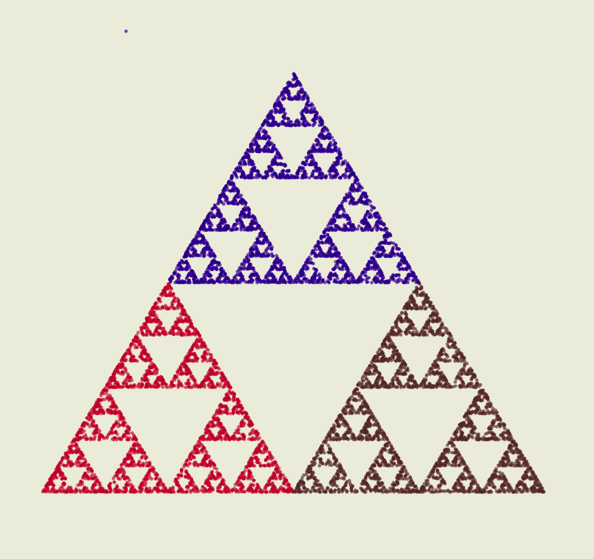
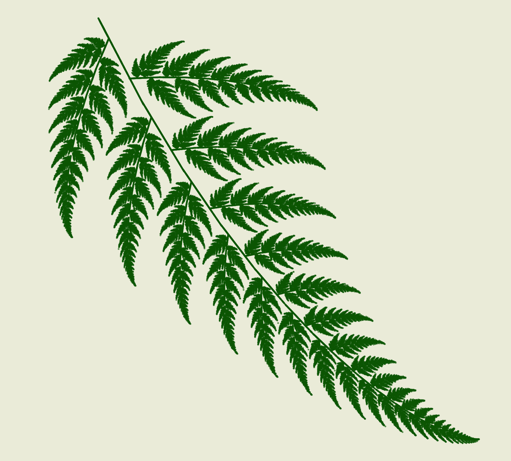
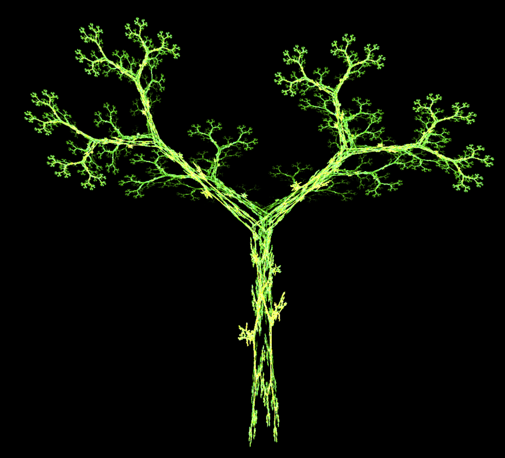

混沌游戏
“天地混沌如鸡子，盘古生其中。万八千岁，天地开辟，阳清为天，阴浊为地。”
——《三五历纪》
在这段最具经典意义的宇宙起源神话中说到，类似于鸡蛋这样一个封闭体的混沌被打破，盘古生于其中，过了一万八千年，轻而清的阳气上升为天，重而浊的阴气下沉为地，天地由此开辟。
天地诞生的起点， 混沌。
今天我们来玩一个游戏，游戏的规则是这样的：
- 在平面上有一个三角形 或者也可以说是三个点，简称：p1，p2，p3
- 然后呢，在这个平面上 任意选一个点 作为起点 a
- 接下来 我们开始扔骰子，也就是要产生 1 2 3 的随机数
- 当 🎲 结果为1 的时候，a 向 p1 前进一半的距离，并画点标记
- 当 🎲 结果为2 的时候，a 向 p2 前进一半的距离，并画点标记
- 当 🎲 结果为3 的时候，a 向 p3 前进一半的距离，并画点标记
- 如此 循环往复，比如说 重复执行 一万次
我们看下结果是什么

一个神奇的三角形，谢尔宾斯基三角形。用看似随意 简单的计算方法就可以画出来。
说到 混沌 我们不得不先介绍一下他的小伙伴： 分形；
分形
分形，具有以非整数维形式充填空间的形态特征。通常被定义为“一个粗糙或零碎的几何形状，可以分成数个部分，且每一部分都（至少近似地）是整体缩小后的形状”，即具有自相似的性质。分形（Fractal）一词，是芒德勃罗创造出来的，其原意具有不规则、支离破碎等意义。
分形是自然界中普遍存在的现象，比如说你看一棵树，它有着数不清的分枝，但当你仔细去看这些分枝的时候，你会发现它们非常相似，每一分枝和整棵树又是非常的相似的，这可以说就是自相似。自相似是分形的一大特点，当某种形状通过自身的反馈不断循环时，会在不同的尺度产生自相似。物质的各个部分都 或多或少的具有自相似结构。 物体的自相似性为研究事物提供了新的思路，那就是，既然物体的形态是有规律可寻的，那么我们就有办法对其进行描述。基于这一思想，我们可以利 用物体的自相似性，定义一个简单的图形规则，再在这个规则的基础上不断的进行规则迭代，最终会生成让人意想不到的图形。 当然，自然界的事物是自相似的，但不是严格的完全的相似。
混沌
这里所说的混沌并不是混乱之意，而是世间万物的一种属性。人们试图找到自然界事物发展的一定定律，然后用数学公式抽象出来，希望能预测将来事物发展轨迹，大部分时候可以奏效，但是极少时候也会出现问题，出现不可预测情况，比如气候骤变，股市突然暴跌。这些都体现了事物的混沌属性。
混沌，是指在一个能被数学方程式精确描述的系统中，可以自发生成不可预测的现象，并且不需要任何外界的干预。有一种误解是，认为混沌就是一切事物都是非常复杂的，搞不清楚。事实比这更简单但同时也更复杂。通过使用非常简单的法则或方程式，并且里面不包含任何的随机性，系统中所有的元素都是确定的，并且我们完全掌握系统的法则，即使是这样的系统也会产生完全不可预测的现象。由于系统内部构造，在某种情况下，即使在初始的时候有一点点误差，哪怕这个误差小到难以测量，这个误差会随着每次计算不断被放大，随着系统的运转，系统的状态会一点一点地偏离你所期望的状态，由此产生蝴蝶效应。
混沌是一条基本的物理法则。简单的数学方程式能繁衍出复杂的行为，这种复杂超出我们的想象。所以简单而机械的系统能够表现出复杂和丰富的行为。自然界具有固有的不可预测性，这种不可预测的内部驱动力也可以使系统表现出特定的结构。
这里也就稍稍谈谈分形和混沌的简单的概念，其实它非常有趣，大家可以去查看相关书籍，资料等去了解学习，话不多说，下面就讲讲分形的绘制
首先，你要选择一个迭代的函数，然后通过不断的迭代产生很多的点，再将这些点画到画板上即可，这是基本的套路。
美国科学家M.F.Barnsley于1985年发展了这一分形构型系统，并命名为迭代函数系统（Iterated Function System，IFS），后来又由Stephen Demko等人将其公式化，并引入到图像合成领域中。IFS将待生成的图像看做是由许多与整体相似的（自相似）或经过一定变换与整体相似的（自仿射）小块拼贴而成。
迭代函数系统，这个名词不难理解。首先 迭代函数 大家一定非常不陌生，比如 斐波那契数列。
1 | function fibonacci(n) { |
也就是 我们写一个函数，然后不断的调用自己，也就是递归。那么递归函数系统，就是有很多个递归函数组成的一个系统，用这个模式进行工作。
说了这么多，来看一下 具体 谢尔宾斯基三角形 是怎么实现的吧：
1 | // 首先 是三角形的三个顶点，这个位置可以随便放，就会画出不同形状的谢尔宾斯基三角形 |
1 | // 初始化一个 svg |
还有 设置 迭代次数：times = 10000;
有了这些 就可以开始画图了：
1 | // 按照上述规则，计算下个点的坐标， |
然而，我们能做的不仅于此啊，谢尔宾斯基三角形非常中规中矩，我们再来看看 利用 IFS 画出来 惊人的大作吧
方法很简单，修改计算坐标方法就可以了，比如：
1 | function getCoords(x, y) { |
这次 我们会按照这个思路画出一个栩栩如生的蕨类植物，打点15万个。

我们再来画一棵树🌲试试看，

接下来 我们有个大胆的猜想，是不是世间万物，都可以用这个混沌游戏画出来呢？ 理论上说，这个假设是成立的，http://paulbourke.net/fractals/ ，这个网站，是全球热心网友搜集的分形相关的各种图形，里面有一个 http://paulbourke.net/fractals/googleearth/ 的小版块，航拍各个国家的河流形状分布，就是分形啊！激动的仿佛摸到了世界之钥！！ 数学真神奇且伟大
拓展链接：
http://paulbourke.net/fractals/
https://andrew.wang-hoyer.com/experiments/chaos-game/?b=0&c=13_22_13_22&cm=1&e=1_4_3&n=1&t=s0.5r0p0.5&v=1